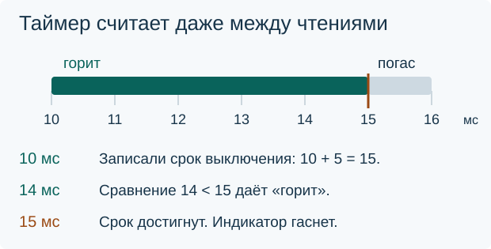

Состояние и события
В журнале записаны команды «включить индикатор» и «прочитать индикатор». Чтобы ответить на очередное чтение, достаточно помнить, когда индикатор должен погаснуть. Эту часть истории, которую программа сохраняет для следующего шага, называют состоянием.
Вид состояния зависит от задачи. Для настроек подойдёт набор флагов, для счётчика понадобится предыдущее показание, а для таймера — время выключения.
Флаги в одной маске
Флаг хранит ответ «да» или «нет». Пусть бит 0 отвечает за звук, бит 1 за вибрацию, бит 2 за подсветку. Биты считаем справа налево. В двоичной маске состояния 0101 включены звук и подсветка.
| Что требуется | Маска | Результат 0101 & маска |
Всё включено? |
|---|---|---|---|
| Звук | 0001 |
0001 |
Да |
| Подсветка и вибрация | 0110 |
0100 |
Нет, вибрация выключена |
Побитовое И (&) оставляет единицы, общие для состояния и маски. Если результат равен всей маске, выполнены все требования. Если достаточно одного из запрошенных признаков, проверяют (state & required) != 0. Подробнее о битовых операциях.
C++
#include <cstdint>
using std::uint64_t;
bool has_all_flags(uint64_t state, uint64_t required) {
return (state & required) == required;
}
Тот же алгоритм на Python
def has_all_flags(state, required):
return (state & required) == required
Маска 0 означает, что требований нет. Функция вернёт истину для любого состояния. Обе реализации рассчитаны на неотрицательные маски.
Разность показаний циклического счётчика
Пусть счётчик показывает только последнюю цифру числа шагов. Сначала на нём было 8, затем стало 2. Можно проследить переход по одному шагу:
8 → 9 → 0 → 1 → 2
Прошло как минимум четыре шага. Тот же результат дали бы 14 или 24 шага. Поэтому точно восстановить разность по двум показаниям можно, если счётчик движется только вперёд и между чтениями проходит меньше m шагов, где m — число разных показаний.
Входные показания лежат в диапазоне [0, m), а m > 0. В Python остаток при положительном делителе неотрицателен. В C++ можно взять разность и при необходимости прибавить модуль.
C++
long long counter_gap(long long previous, long long current,
long long modulus) {
const long long difference = current - previous;
return difference < 0 ? difference + modulus : difference;
}
Тот же алгоритм на Python
def counter_gap(previous, current, modulus):
return (current - previous) % modulus
Если нужен итог за весь журнал, сложи промежутки между соседними показаниями. Разность первого и последнего теряет обороты, случившиеся в промежутке.
Когда обновлять состояние таймера
Индикатор включили в момент 10 на 5 миллисекунд. Срок выключения off_at равен 15.

Прочитай индикатор до и после срока
Сейчас 10 мс, срок выключения — 15 мс. Переведи часы на 4 мс и прочитай индикатор. Затем проверь, что вернёт чтение ровно в момент 15 мс. Новая команда включения отсчитывает пять миллисекунд от текущего момента.
В микроконтроллере время может отсчитывать аппаратный таймер. В его счётчик приходят тактовые импульсы. Например, если после делителя приходит 1000 импульсов в секунду, счётчик увеличивается на единицу каждую миллисекунду. Программа может прочитать текущее показание и сравнить со сроком. В нашей функции роль такого показания играет аргумент now. Функция отвечает на запрос о логическом состоянии. Для выключения физического светодиода точно в срок можно запланировать отдельное событие таймера. Как программа связана с устройствами
Момент чтения now |
Что видим | Почему |
|---|---|---|
14 |
Горит | До выключения ещё 1 мс |
15 |
Погас | Срок наступил именно сейчас |
16 |
Погас | Новых команд включения не было |
Пример работает с неубывающим временем без перехода счётчика через ноль. При чтении сравниваем действующий срок off_at с now. Если срок уже наступил, убираем его. Отсутствие срока обозначает погасший индикатор.
C++
#include <optional>
using std::optional;
bool read_indicator(optional<long long>& off_at, long long now) {
if (off_at && *off_at <= now) {
off_at.reset();
}
return off_at.has_value();
}
Тот же алгоритм на Python
def read_indicator(off_at, now):
if off_at is not None and off_at <= now:
off_at = None
return off_at, off_at is not None
Python возвращает обновлённый срок и результат чтения. C++ обновляет срок через ссылку и возвращает результат чтения. Команда включения устанавливает срок now + duration. Обработка занимает O(1) на событие и обходится без прохода по миллисекундам. Если две команды пришли в один момент, порядок их обработки нужно определить заранее.